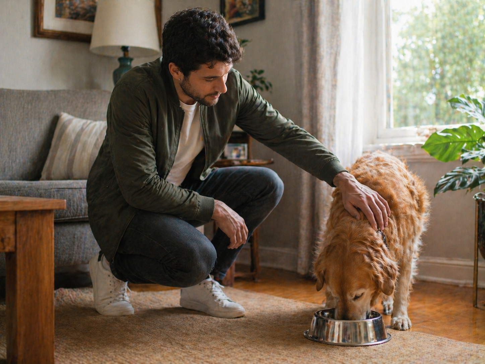

We talk first
We talk through the situation, what you need checked, and what kind of update would actually help.
 Email
Email
St. George • Washington • Southern Utah
Red Desert Check-In provides local, in-person check-ins for the people, pets, homes, and places that matter to you. I show up, look at what needs to be checked, and send you a clear update after.
The real problem
Sometimes it is not an emergency. It is not full-time care. It is not a big dramatic situation. You just need someone you trust to show up, notice what is going on, and tell you clearly.
How it works
We talk through the situation, what you need checked, and what kind of update would actually help.
I visit locally, check what needs to be checked, spend time where needed, and notice what matters.
You receive a clear update after so you are not guessing, spiraling, or trying to read between the lines.
Check-in types
This is one check-in service that can be used in different situations. The category just helps us understand what needs to be looked at.
For aging loved ones who are still independent but need local eyes.
Examples:
For someone you care about when you cannot get there yourself.
Examples:
Extra eyes during illness, surgery recovery, or temporary support.
Examples:
For homes, rentals, offices, or small businesses that need a walkthrough.
Examples:

For checking on animals, food, water, safety, and anything that seems off.
Examples:
If it does not fit in a box, we can talk through what you need.
Examples:
Pricing
No confusing packages. Start with what you need.
$65
For a single check-in, occasional need, or one-time situation.
Best for ongoing support
$45/visit
For clients booking more than one check-in.
Consultation first: We talk through the situation before scheduling.
Flexible schedule: Weekly, monthly, temporary, or custom.
Need something different? Custom plans can be discussed.
Second offer
Sometimes the thing that needs to be preserved is not the house, the fridge, or the schedule. Sometimes it is the story.
Life Chapters is a guided storytelling service where I record conversations, transcribe them, and turn them into a digital keepsake for the person or family.
Learn About Life Chapters

About Red Desert Check-In
I’m Jenell. I work in medical alarm dispatch, and I have spent years talking with seniors, families, caregivers, and people in stressful situations.
I know the difference between panic and concern. I also know how often families need someone calm, local, and practical to help them get a clearer picture.
Red Desert Check-In exists for the moments when you need human eyes, honest updates, and someone willing to show up.
Schedule a consult at https://koalendar.com/e/red-desert-check-in.
Questions? Feel free to email me at reddesertcheckin@gmail.com.